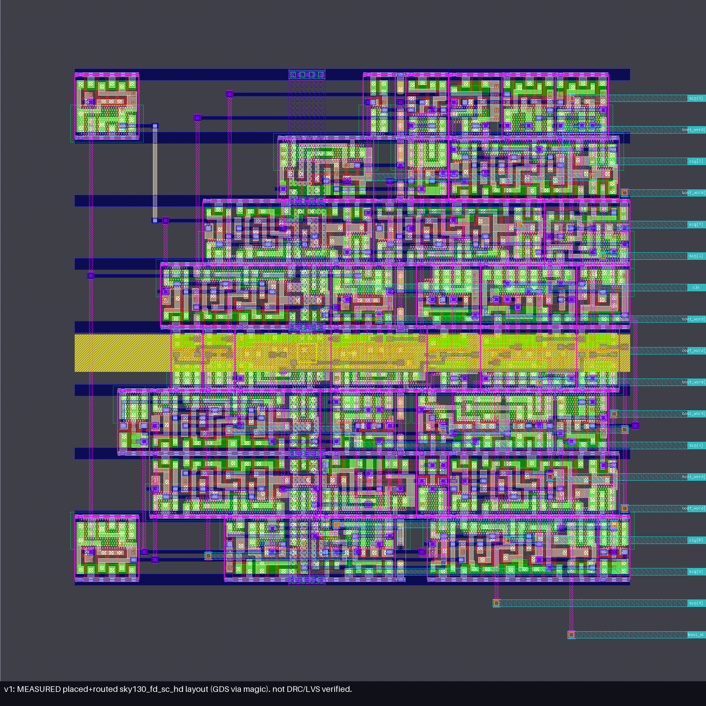
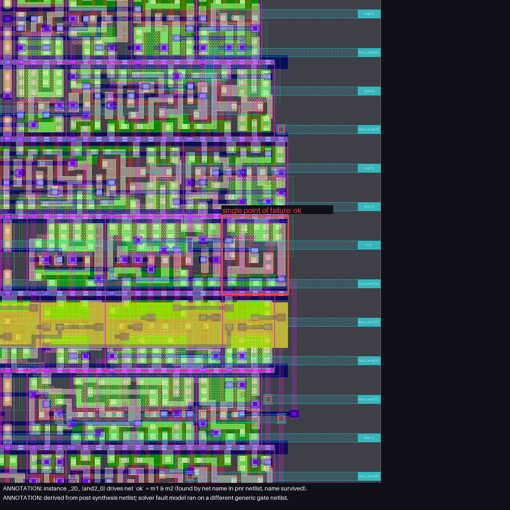
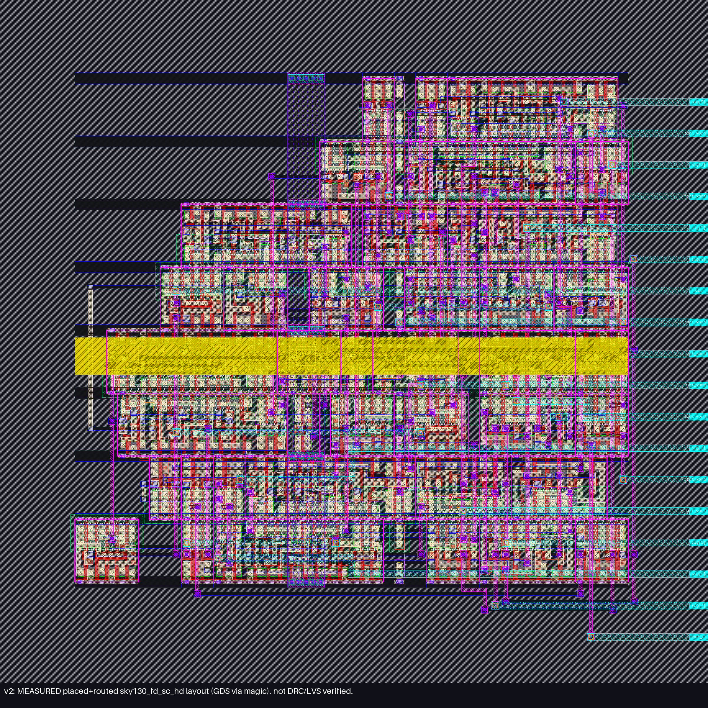
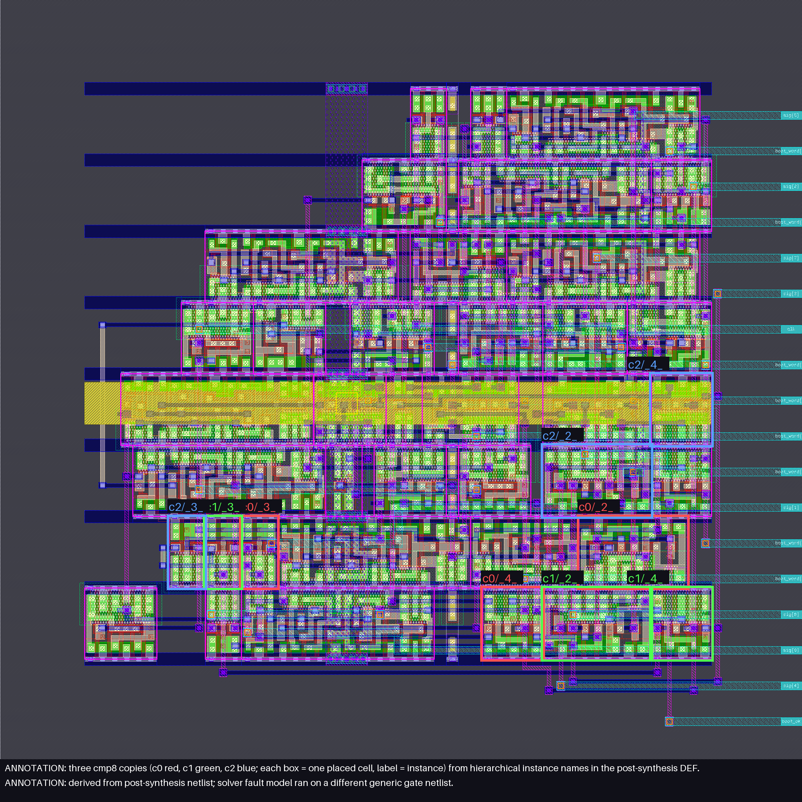

not DRC/LVS verified Real yosys + OpenROAD + magic flow, ~25 s total. Router reports 0 violations; magic DRC reports raw errors (V1 13, V2 18, undiagnosed); netgen LVS: netlists do not match. No physical glitch behaviour is claimed.
| V1 | V2 | |
|---|---|---|
| yosys cells / area | 35 / 357.8 um2 | 36 / 362.8 um2 |
| cmp8 copies survived | 2 of 2 | 3 of 3 |
| placed area, utilisation | 393 um2, 75% | 393 um2, 75% |
| die | 30.4 x 30.4 um | 30.6 x 30.6 um |
| setup / hold slack (10 ns) | +6.964 / +0.509 ns | +7.016 / +0.479 ns |
| runtime synth / P&R | 1.0 s / 8.2 s | 1.2 s / 12.7 s |
| route DRC report | empty (0 violations) | empty (0 violations) |
| magic DRC / netgen LVS | 13 errors / no match | 18 errors / no match |


ok in the post-synthesis netlist (name survived, high confidence). The solver fault model ran on a different, generic gate netlist.

Commands: see README.md.